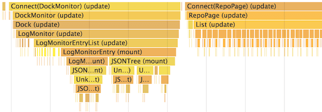

Оптимизация производительности
React использует множество умных подходов, чтобы минимизировать количество дорогостоящих операций DOM, необходимых для обновления пользовательского интерфейса. Для многих приложений использование React приведет к созданию быстрого пользовательского интерфейса, не выполняя много работы касательно оптимизации производительности. Тем не менее, есть несколько способов ускорить ваше приложение.
Использование сборки Production
Если вы проводите бенчмаркинг или испытываете проблемы с производительностью в своих приложениях React, убедитесь, что вы работаете с минифицированной production-сборкой.
По умолчанию React содержит много полезных предупреждений. Эти предупреждения очень полезны в разработке. Тем не менее, они делают React приложение больше и медленнее, поэтому вы должны использовать production-версию при развертывании приложения.
Профилирование компонентов с помощью вкладки «Производительность Chrome»
В режиме development вы можете визуализировать, как компоненты монтируются, обновляются и демонтируются, используя инструменты производительности в поддерживаемых браузерах. Например:
Избежание согласования
React строит и поддерживает внутреннее представление отображаемого пользовательского интерфейса. Оно включает элементы React, которые вы возвращаете из своих компонентов. Это представление позволяет React избегать создания узлов DOM и доступа к существующим узлам без необходимости, поскольку это может быть гораздо медленнее, чем те же операции над простыми объектами JavaScript. Иногда его называют «виртуальным DOM», и оно работает аналогично в React Native.
Когда свойства или состояние компонента изменяются, React решает, требуется ли фактическое обновление DOM, сравнивая вновь возвращенный элемент с ранее отображаемым. Когда они не равны, React обновит DOM. Вы можете визуализировать эти перерисовки виртуального DOM с помощью React DevTools. Для этого в консоли разработчика выберите параметр «Highlight Updates» на вкладке «React»:

Взаимодействуя со своей страницей, вы должны увидеть, что вокруг любых компонентов, которые были переотрисованы, мгновенно появляются цветные границы. Это позволяет вам выявлять повторные отрисовки, которые не были необходимыми.